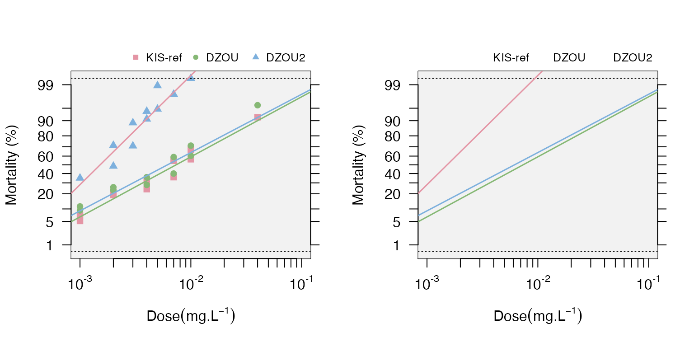
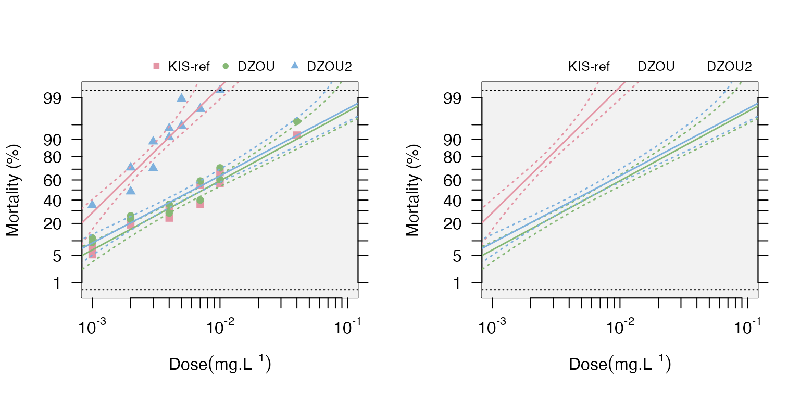
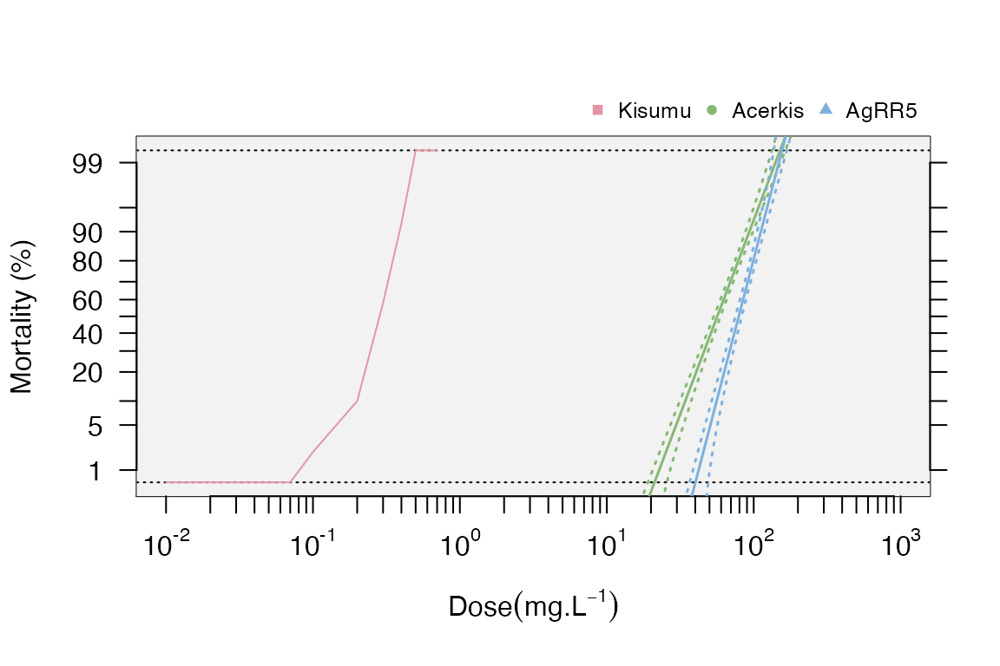

BioRssay.Rmd
library(BioRssay)Piyal Karunarathne, Pascal Milesi, Nicolas Pocquet, and Pierrick Labbé
This package is designed to analyze mortality data from bioassays of one or several strains/lines/populations. As of now, the functions in the package allow control mortality with Abott’s correction for more precise analysis of mortality. For each strain, functions are available to generate mortality-dose regression using a generalized linear model (takes over-dispersion into account and allows mortality of 0 or 1), and plot the regressions with or without the desired confidence interval (e.g. 95%).
The package also carries functions to test the validity of the regression outputs using a chi-square test between model predictions and observed number of dead samples; A significant valid test will reflect a non-linear data (e.g. mixed populations). These plots can be drawn side by side for a better comparison with the same functions (see below).
The functions in the package also compute the lethal dose for 50% and 95% of the populations (LD50 and LD95 respectively), with their 95% confidence intervals (CI), using a methodology described by Johnson et al. 2013, which allows taking the heterogeneity of the data into account (Finney 1971) to calculate the CI (i.e. a larger heterogeneity will increase the CI).
The methods implemented use a likelihood ratio test (LRT) to test coherence of mortality-dose regressions among different strains. In the case of more than two strains, a pairwise comparison of models is performed and further corrected using a sequential Bonferroni correction (Hommel 1988). Finally, users can calculate the resistance ratios (RR) at LD50 and LD95, i.e. the ratios between a given strain and the starain with the lower LD50 and LD95, respectively (usually it is the susceptible reference), with their 95% confidence intervals, calculated according to Robertson and Preisler (1992).
BioRssay can import data in any format that is compatible with base R data import functions (e.g. read.table, read.csv). However, for the functions in BioRssay to work, the data must have the following columns * strain: a column containing the strains tested * dose: dosage tested on each strain/sample. controls should be entered as 0 * total: total number of samples tested * dead: number of dead samples See the examples below.
Example 1
data(bioassay)
head(bioassay$assay2)
#> insecticide strain dose total dead replicate date color
#> 1 temephos KIS-ref 0.000 100 1 1 26/01/11 1
#> 2 temephos KIS-ref 0.002 97 47 1 26/01/11 1
#> 3 temephos KIS-ref 0.003 96 68 1 26/01/11 1
#> 4 temephos KIS-ref 0.004 98 89 1 26/01/11 1
#> 5 temephos KIS-ref 0.005 95 90 1 26/01/11 1
#> 6 temephos KIS-ref 0.007 99 97 1 26/01/11 1Also download the test data at https://github.com/milesilab/DATA/blob/main/BioAssays/Test.BioRssay.txt and find more example data sets at https://github.com/milesilab/DATA/blob/main/BioAssays
Example 2
file <- paste0(path.package("BioRssay"), "/Test.BioRssay.txt") # if the download doesn't work
test<-read.table(file,header=TRUE)
head(test)
#> insecticide strain dose total dead
#> 1 bendiocarb Kisumu 0.00 25 0
#> 2 bendiocarb Kisumu 0.00 25 0
#> 3 bendiocarb Kisumu 0.00 25 0
#> 4 bendiocarb Kisumu 0.00 25 0
#> 5 bendiocarb Kisumu 0.01 25 0
#> 6 bendiocarb Kisumu 0.01 25 0NOTE: It is also possible to include a reference strain/population with the suffix “ref” in the strain column, or the reference strain can be specified later in the function “resist.ratio” to obtain the resistance ratios for each strain (see below).
Let’s have a quick look at the data again.
assays<-bioassay
exm1<-assays$assay2
head(exm1)
#> insecticide strain dose total dead replicate date color
#> 1 temephos KIS-ref 0.000 100 1 1 26/01/11 1
#> 2 temephos KIS-ref 0.002 97 47 1 26/01/11 1
#> 3 temephos KIS-ref 0.003 96 68 1 26/01/11 1
#> 4 temephos KIS-ref 0.004 98 89 1 26/01/11 1
#> 5 temephos KIS-ref 0.005 95 90 1 26/01/11 1
#> 6 temephos KIS-ref 0.007 99 97 1 26/01/11 1
unique(as.character(exm1$strain))
#> [1] "KIS-ref" "DZOU" "DZOU2"This example contains the mortality data of three strains (KIS, DZOU, and KIS-ref); KIS is used as the reference with suffix “ref”.
The first step is to check if the controls also have considerable mortality and whether a correction should be applied to the data, followed by probid transformation (we might need to explain more on why this transformation). This is easily achieved with the function “probit.trans”.
dataT<-probid.trans(exm1) #additionally confindence interval for controls' mortality can be set as desired with "conf="; default is 0.05.
dataT$convrg
#> NULL
head(dataT$tr.data)
#> insecticide strain dose total dead replicate date color mort
#> 2 temephos KIS-ref 0.002 97 47 1 26/01/11 1 0.4845361
#> 3 temephos KIS-ref 0.003 96 68 1 26/01/11 1 0.7083333
#> 4 temephos KIS-ref 0.004 98 89 1 26/01/11 1 0.9081633
#> 5 temephos KIS-ref 0.005 95 90 1 26/01/11 1 0.9473684
#> 6 temephos KIS-ref 0.007 99 97 1 26/01/11 1 0.9797980
#> 7 temephos KIS-ref 0.010 99 99 1 26/01/11 1 0.9940000
#> probmort
#> 2 -0.0387720
#> 3 0.5485223
#> 4 1.3295291
#> 5 1.6198563
#> 6 2.0495943
#> 7 2.5121443The output of probid.trans is a list of which the first element (convrg) contains the results of Abotte’s correction and convergence values. However, since the mortality in the controls (dose=0) is below 5% (alpha=0.05), no correction applied to the data. Hence data$convrg is NULL. The second element of the list dataT is the probid transformed data with two additional columns: mort: mortality and probmort: probid transformed mortality. This data frame is what we’ll use in the next steps of the analysis.
Next we will get the LD values at (50% and 95%) and resistance ratios at their respective LD values. The function “resist.ratio” allows you to do just that. Here you can also change the confidence level at which the LD is tested (default is 0.95); the reference strain can be specified in “ref.strain=”, if labeled with the suffix “ref” (as mentioned above), it is not necessary to specify it here although doing so still works. However, if the strain is not labeled with the said suffix in the data, ref.strain must be specified here. If neither labeled with “ref” nor specified with “ref.strain=”, the analysis will not consider any references.
data<-dataT$tr.data #probid transformed data
RR<-resist.ratio(data)
RR
#> LD50 LD50min LD50max varLD50 LD95 LD95min
#> DZOU 0.007360928 0.006136601 0.009107134 0.0004813749 0.064493518 0.04099287
#> DZOU2 0.006156279 0.005043721 0.007720790 0.0003991162 0.057611139 0.03537616
#> KIS-ref 0.001519579 0.001163367 0.001819190 0.0006597966 0.005011012 0.00414955
#> LD95max varLD95 Slope SlopeSE Intercept InterceptSE
#> DZOU 0.125240023 0.012002361 1.745048 0.1537397 3.722305 0.3579163
#> DZOU2 0.121382718 0.010222512 1.693651 0.1657277 3.744123 0.3906964
#> KIS-ref 0.006666735 0.001109805 3.174155 0.3811593 8.945646 0.9848957
#> h g Chi(p) rr50 rr50max rr50min rr95
#> DZOU 1.905596 0.03971941 0.3606160 4.844057 5.641835 4.159087 12.87036
#> DZOU2 2.326646 0.04899907 0.3568112 4.051305 4.692185 3.497959 11.49691
#> KIS-ref 3.259672 0.07158818 0.5714766 1.000000 0.000000 0.000000 1.00000
#> rr95max rr95min
#> DZOU 14.99001 11.050435
#> DZOU2 13.31562 9.926605
#> KIS-ref 0.00000 0.000000Note that we did not specify the reference strain here as it is already labeled in the data
For each strain you have first the LD50 and LD95 and their upper and lower limits (95% CI), then the slope and intercept of the regression (with their standard error), the heterogeneity (h) and the g factor (“With almost all good sets of data, g will be substantially smaller than 1.0 and seldom greater than 0.4.” Finney, 1971). The result of the chi test (Chi(p)) is then indicated to judge whether the data are well fitted to the regression or not: here all the p-values are over 0.05 so the fits are acceptable). Finally the resistance ratios are indicated for LD50 and LD95 (RR50 and RR95). As there are 3 strains, the script first tests whether they are all similar (i.e. equivalent to 1 strain) or not (3 strains vs 1 strain). Here, the test is highly significant, some strains are thus different in terms of resistance.
Plotting option with confidence levels and a validity test of the regression models is also available in the function “resist.ratio”. However, we did not use it here and we will do a more comparative plotting with “mort.plot” next.
#strains<-levels(data$strain)
par(mfrow=c(1,2)) # set plot rows
mort.plot(data,plot.conf=FALSE,test.validity=FALSE) # plot without confidence intervals and test of validity of the model
mort.plot(data,plot.conf=FALSE,test.validity=FALSE,pch=NA) # plot only the regression lines
# same plots with confidence level
par(mfrow=c(1,2))
mort.plot(data,plot.conf=TRUE,test.validity=FALSE)
mort.plot(data,plot.conf=TRUE,test.validity=FALSE,pch=NA) It is also possible to input different confidence levels with “conf.level=”. The default is 0.95. In cases where only a subset of all the tested strains needs to be tested, they can be listed with “strains=”; if not provided, all the strains will be plotted.
We follow the same workflow the example 2. However, there are more than one insecticide tested in this experiment. Therefore, we need to subset the data into separate insecticides and carry out the analysis as before.
head(test)
#> insecticide strain dose total dead
#> 1 bendiocarb Kisumu 0.00 25 0
#> 2 bendiocarb Kisumu 0.00 25 0
#> 3 bendiocarb Kisumu 0.00 25 0
#> 4 bendiocarb Kisumu 0.00 25 0
#> 5 bendiocarb Kisumu 0.01 25 0
#> 6 bendiocarb Kisumu 0.01 25 0
unique(test$insecticide)
#> [1] "bendiocarb" "chlorpyrifos-metyl" "permethrin"
bend<-test[test$insecticide=="bendiocarb",]
head(bend)
#> insecticide strain dose total dead
#> 1 bendiocarb Kisumu 0.00 25 0
#> 2 bendiocarb Kisumu 0.00 25 0
#> 3 bendiocarb Kisumu 0.00 25 0
#> 4 bendiocarb Kisumu 0.00 25 0
#> 5 bendiocarb Kisumu 0.01 25 0
#> 6 bendiocarb Kisumu 0.01 25 0We have a subset of the data with only the insecticide “bendiocarb”
dataT.b<-probid.trans(bend)
data.b<-dataT.b$tr.data
RR.b<-resist.ratio(data.b,plot = T,ref.strain = "Kisumu",plot.conf = T, test.validity = T)
head(RR.b)
#> LD50 LD50min LD50max varLD50 LD95 LD95min
#> Acerkis 56.5098989 53.2114813 59.6792554 0.001786642 107.634086 100.302691
#> AgRR5 79.1108266 74.7149834 83.1800402 0.001573892 123.408708 115.649404
#> Kisumu 0.2726414 0.2587263 0.2860428 0.022377514 0.446101 0.415979
#> LD95max varLD95 Slope SlopeSE Intercept InterceptSE
#> Acerkis 117.1146160 0.002410525 5.878145 0.3656493 -10.299242 0.6734320
#> AgRR5 134.1446941 0.002449533 8.517708 0.6962015 -16.168620 1.3613946
#> Kisumu 0.4878805 0.144419248 7.691933 0.6055473 4.341389 0.3281966
#> h g Chi(p) rr50 rr50max rr50min rr95
#> Acerkis 1.000000 0.01486432 9.995387e-01 207.2682 418.0336 102.7671 241.2774
#> AgRR5 1.612638 0.02786453 9.609371e-01 290.1644 583.4161 144.3144 276.6385
#> Kisumu 1.000000 0.02380791 7.672306e-24 1.0000 0.0000 0.0000 1.0000
#> rr95max rr95min
#> Acerkis 486.6258 119.6294
#> AgRR5 556.2204 137.5873
#> Kisumu 0.0000 0.0000Note that we have enabled the arguments “plot=” with “plot.conf=” and “test.validity=”. When the regression is not valid (Chi-square significance) for a strain, it will be plotted without the regression, as in this example “Kisumu”.
#test the validity of the regression models
t.models<-model.signif(data.b)
t.models
#> $model
#> strain1 strain2 model.pval deviance df bonferroni
#> 1 Acerkis AgRR5 9.81944629906017e-18 -93.3705086548187 -2 sig
#> 2 Acerkis Kisumu 4.09605796743876e-78 -1220.98742604214 -2 sig
#> 3 AgRR5 Kisumu 3.52611879574658e-84 -1433.09904360371 -2 sigThese steps can be repeated for separate insecticides in the example 2 one by one or in a loop (e.g. for loop)
Finney DJ(1971). Probitanalysis. Cambridge:Cambridge UniversityPress. 350p.
HommelG(1988). A stage wise rejective multiple test procedure based on a modified Bonferroni test. Biometrika 75, 383-6.
Johnson RM, Dahlgren L, Siegfried BD,EllisMD(2013). Acaricide,fungicide and druginteractions in honeybees (Apis mellifera). PLoSONE8(1): e54092.
Robertson, J. L., and H.K. Preisler.1992. Pesticide bioassays with arthropods. CRC, Boca Raton, FL.